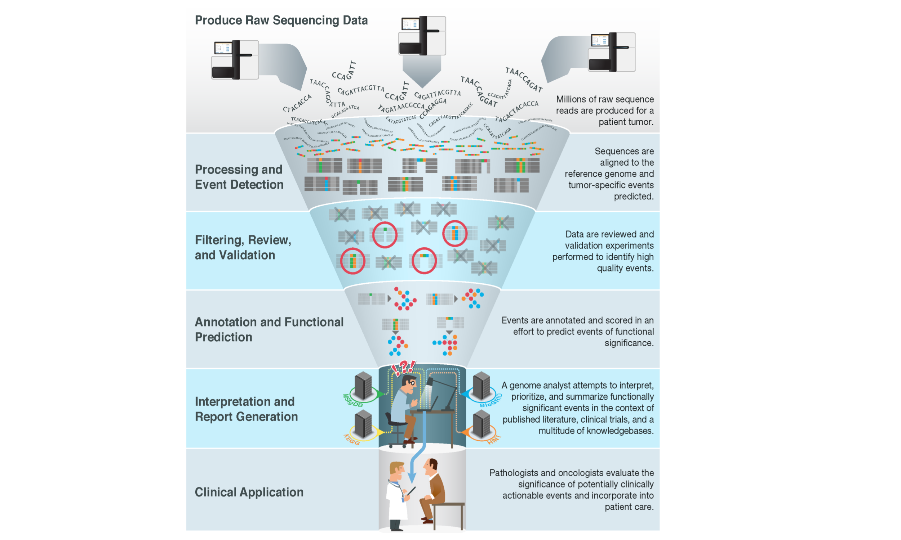

Chapter 1 Introduction
1.1 Motivation
With the advent of massively parallel sequencing, millions of raw sequence reads can now be easily produced for a patient’s tumor. Largely automated pipelines exist to process these raw data, detect various types of molecular alterations (or variants), filter and review to identify high-confidence calls, and annotate these variants for functional significance. However, a major bottleneck remains at the variant interpretation stage. Genome analysts, molecular pathologists, clinical geneticists, laboratory geneticists and others are faced with a deluge of variants of potential relevance (Good et al. 2014). These variants must be manually reviewed and intersected with a vast ecosystem of knowledgebases and biomedical literature to provide current interpretation of their relevance for clinical application.

1.2 Target Audience
The course is intended for anyone seeking a better understanding of current best practices in somatic cancer variant interpretation. This might include clinical geneticists, laboratory geneticists, molecular pathologists, oncologists, or other cancer care providers or cancer researchers.
1.3 Curriculum
This course will teach learners to:
- Understand key concepts of somatic cancer variant interpretation
- Introduce key SOPs and guidelines for classifying the clinical relevance and oncogenicity of somatic cancer variants
- Introduce ClinGen Somatic Cancer efforts
- Describe somatic variant knowledgebases
- Introduce CIViC as a curation platform for somatic variant interpretation